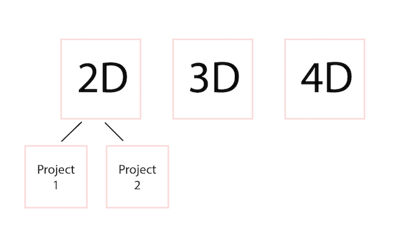
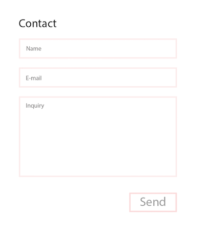

Specification Document
What is the purpose of the website?
An online portfolio that provide visual information showing the type of work I make as an illustrator.
Who is the intended audience?
Potential employers
What tone do you want for the site’s written content?
Since my intended audience is towards potential employers, Im gravitating towards a formal tone for professional image.
What will be the primary content of your site?
My projects usually consist of 2D, 3D and 4D works. Each of the three categories will have its own page featuring the work that reflects it. The categories 2D, 3D, 4D are vague, so when users click on a specific category and enter the new page where the works are presented. When users hover over a project, a caption or title will appear under every project so users have an idea of what they are looking at.

What will be the secondary content?
Secondary content will include the extra information for about, resources, and contact information for viewers who are interested in more detail.

How will users navigate through your site?
I want users to have a memorable experience on my site and I would like to add interactive features onto it to make it more engaging and personable but keeping it on a professional level.
Design Tree
Design tree illustration web page layout